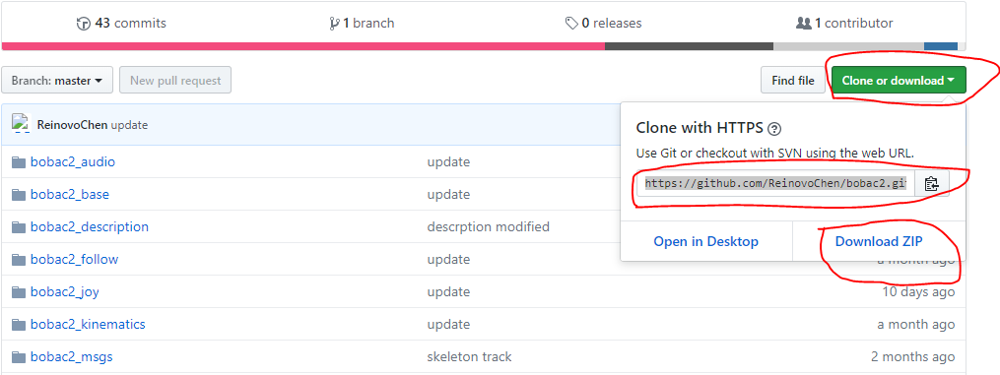

软件获取与编译
如果用户有意或者无意地造成bobac机器人中的功能包的缺失、损坏，抑或是想要在其他设备上使用其中的个别功能包，可参照下列步骤进行相关功能包的安装与编译
1、下载
功能包地址：https://github.com/ReinovoChen/bobac2
进入网站中，如下图，点击Clone or download。选择直接下载Download ZIP

或者在终端使用指令下载到当前文件夹中
$ git clone https://github.com/ReinovoChen/bobac2.git
2、安装驱动和依赖
下载完成后（如果是点击Download ZIP下载的则需要解压），会得到一个名字为bobac2_master的文件夹，该目录下就是bobac机器人所使用的功能包及相关驱动。
将bobac2_master文件夹中的所需要的功能包放入bobac2_ws(工作空间)的src/文件夹中
2.1、安装相机驱动（bobac机器人已经安装好了，不需要再次安装，暂不支持ARM版本）
进入camera_driver文件夹中，在该目录下打开终端输入指令
$ ./install_driver.sh
驱动安装完成后，电脑会重启一次。
2.2、安装依赖
在bobac2_ws文件夹下输入指令(需要联网)
rosdep install --from-paths src --ignore-src --rosdistro=kinetic -y
3、编译
将bobac2_ws/目录下的build文件夹和devel文件夹删除，在该路径输入指令
$ catkin_make
如果没有报错，则编译完成。
4、环境变量的配置
打开终端，输入指令（工作空间为bobac2_ws为例）
$ vim ~/.bashrc
在最下面加入一行代码(如果有就不需要)
source ~/bobac2_ws/devel/setup.bash
如下图
保存退出后，输入指令
$ source ~/.bashrc
如果没有报错就说明设置成功，否则就可能是输入的代码写错了或则是在输入的过程中不小心删掉了其他代码
5、更新
我们以后会在GitHub上持续地对bobac机器人软件部分进行完善与更新，用户只需重复上述操作步骤即可完成对bobac机器人的更新。若有特殊操作，将会在README中补充说明，希望用户能够留意。